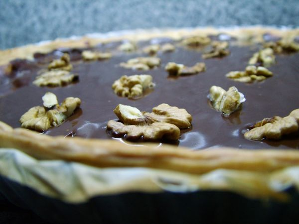

Chocolate Walnut Tart

Photo: lilivanili (CC BY 2.0)
A pecan-pie-style tart made with semisweet chocolate morsels and walnuts in a corn syrup, brown sugar, and egg filling, baked in an 11-inch tart pan.
Directions
- Fit piecrust in 11-inch tart pan. Sprinkle chocolate and walnuts evenly over crust.
- Melt butter. Beat in brown sugar, corn syrup, eggs and vanilla until smooth. Pour into pan.
- Bake in lower third of 350 degree oven 30 minutes. Cool on rack. Serve with whipped if desired.
- Fit the refrigerator pie crust into an 11-inch tart pan. Sprinkle the chocolate morsels and walnuts evenly over the crust.
- Melt the butter. Beat in the brown sugar, corn syrup, eggs, and vanilla until smooth. Pour into the tart pan.
- Bake in the lower third of a 350-degree oven for 30 minutes. Cool on a rack. Serve with whipped cream if desired.
Goes well with
https://lizotte.cool/recipe/chocolate-walnut-tart.html